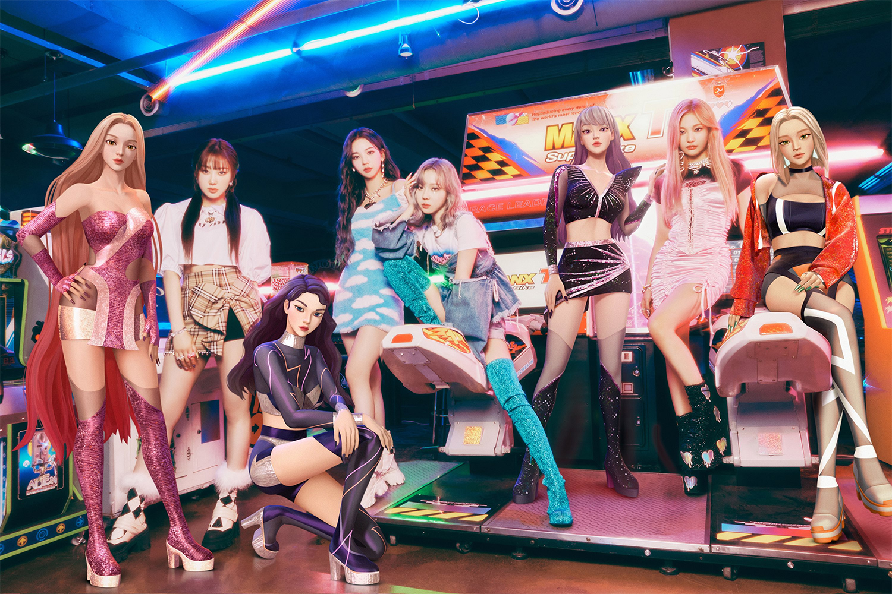

A New Kind of Kpop Group
Aespa (pronounced "Ess - pah") is a four member girl group based in South Korea. They debuted with the single album titled "Black Mamba". For a genre known for wild concepts and songs, Aespa is a new frontier into this space. Their whole concept surrounds the idea of technology and virtual worlds. In many of their videos, they depict the real members themselves as well as their respective virtual avatars. Lee SooMan - former CEO of the parent company, SM Entertainment - wanted a group that incorporated its own lore and storylines throughout the songs and music videos. Since stepping down, their virtual world concept has taken a back seat, but their visuals and musicality remain strong and powerful.
